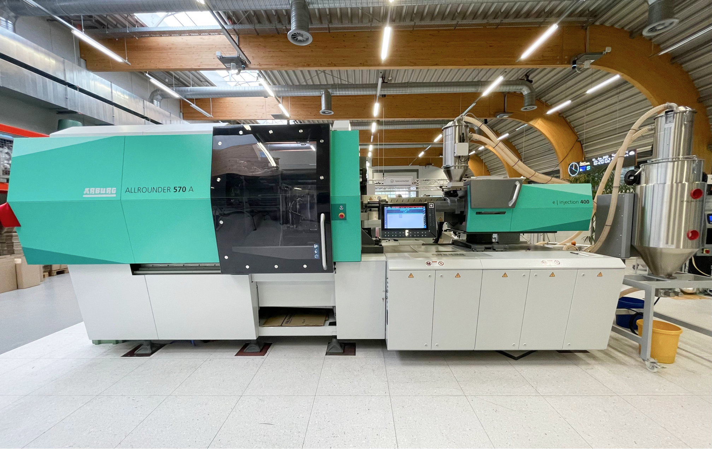

cunAR
Diese App enthält eine geführte Inbetriebnahme der CUNA-Produktion in der SmartFactoryOWL.
Einige der Schritte werden durch Elemente der Augmented Reality erweitert. Die Erkennung erfolgt mithilfe von Markern, welche an der Maschine angebracht sind.
